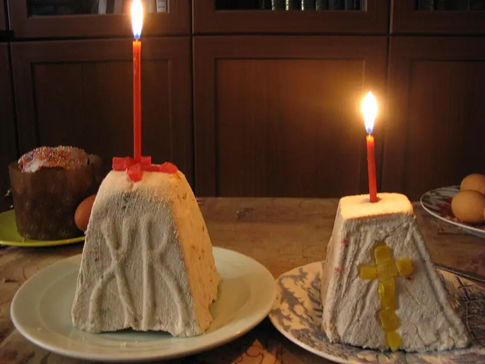

Фото: Mitrius, Public domain

Творожная пасха без выпечки
Сырная пасха из протёртого творога, масла и сметаны с изюмом, застывает под гнётом
40 мин10 порц.349 ккал на порциюБ 18 · Ж 20 · У 24Русская кухня
Продукты на 10 порц.
- Творог 5%1000 г
- Сливочное масло150 г
- Сметана 20%150 г
- Сахар150 г
- Ванильный сахар1 пакетик
- Изюм80 г
- Курага по желанию50 г
Как готовить
- Творог положите в марлю и подвесьте на 2-3 часа или оставьте под гнётом, чтобы ушла лишняя сыворотка.
- Протрите творог через сито дважды или пробейте блендером до гладкости, без крупинок.
- Мягкое масло разотрите с сахаром и ванильным сахаром добела, 3-4 минуты, добавьте сметану.
- Соедините с творогом, вмешайте промытый и обсушенный изюм и нарезанную курагу.
- Пасочницу или чистый дуршлаг застелите влажной марлей в два слоя, выложите массу и плотно утрамбуйте.
- Закройте краями марли, сверху положите блюдце и груз 1-2 кг. Поставьте на миску для стока сыворотки.
- Держите в холодильнике 12-24 часа. Пасха готова, когда она плотная и держит форму после снятия марли.
Совет. Берите сухой творог 5-9%: из влажного пасха поплывёт. Хранится в холодильнике до 5 дней.